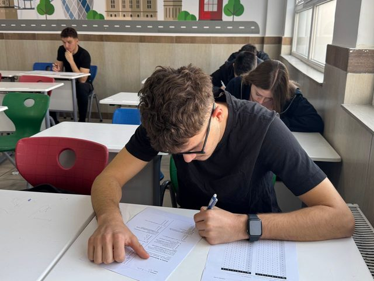
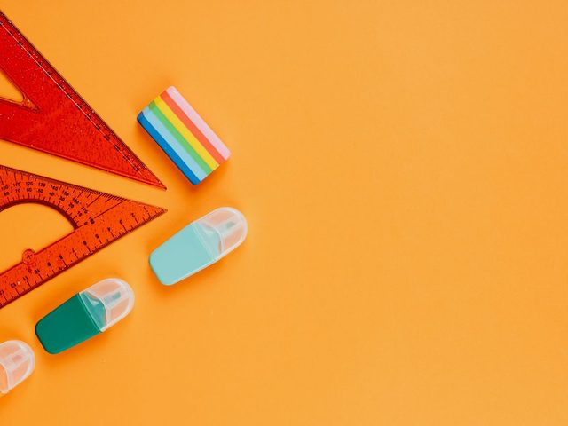
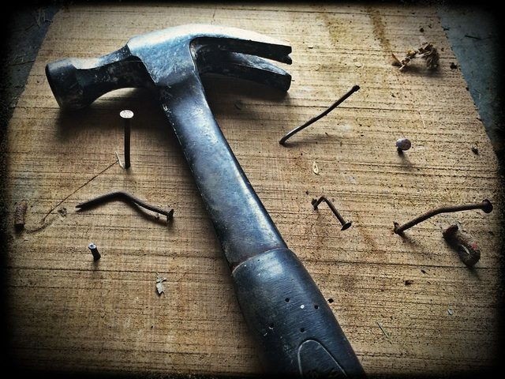
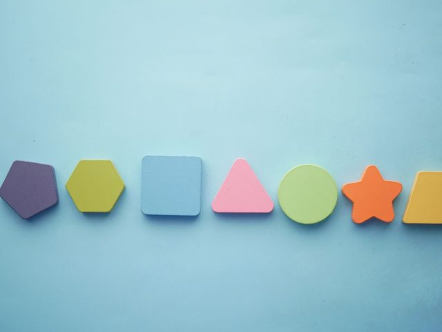

VOCABULARY · LALA WORD UNIT 12
The Beating Heart．一字多義（十二）
bill 是帳單，也是「鈔票」和「鳥嘴」；nail 是指甲，也是「釘子」。這個單元有 6 個主題單字、17 個更多單字。
共 23 個單字．點 🔊 聽發音

1pushv. / n.
推；推擠；推一下；按（按鈕）；逼迫
push - pushed - pushed - pushing
- 1v.推；推擠Push the door to open it.推門就能打開。
- 2n.推一下Can you give the car a push?你可以幫忙推一下車嗎？
- 3v.按（按鈕）Push the button to call the elevator.按按鈕叫電梯。
- 4v.逼迫Don't push yourself too hard.別把自己逼得太緊。

2fulladj.
完整的；全部的；吃飽的；滿的；充滿的
full - fuller - fullest
- 1adj.完整的；全部的 full name 全名；full marks 滿分Please write your full name here.請在這裡寫你的全名。
- 2adj.吃飽的No more, thanks. I'm full.不用了，謝謝，我吃飽了。
- 3adj.滿的The bus is full. Let's wait for the next one.公車滿了，我們等下一班。
- 4adj.充滿的 be full of 充滿The room is full of balloons.房間裡滿是氣球。

3circlen. / v.
循環；圓圈；圈子；界；盤旋；繞圈；圈起來
circle - circled - circled - circling
- 1n.循環Exercise and good sleep make a healthy circle.運動和好睡眠形成健康的循環。
- 2n.圓圈The kids sat in a circle.孩子們圍成一圈坐著。
- 3n.圈子；界She has a large circle of friends.她的朋友圈很廣。
- 4v.盤旋；繞圈A bird circled over the lake.一隻鳥在湖上盤旋。
- 5v.圈起來Circle the right answer.把正確答案圈起來。

4testn. / v.
檢查；檢測；測試；考試；測驗；考驗
test - tested - tested - testing
- 1n.檢查 eye test 視力檢查；blood test 驗血I had an eye test today.我今天做了視力檢查。
- 2v.檢測；測試They tested the new phone for a month.他們測試新手機一個月。
- 3n.考試；測驗 take a test 考試；pass / fail a test 通過／沒通過We have an English test tomorrow.我們明天有英文考試。
- 4v.考驗The long hike tested our strength.長途健行考驗我們的體力。
5recordv. / n.
記錄；錄製；紀錄；最佳成績
record - recorded - recorded - recording
- 1v.記錄Record your weight every day.每天記錄你的體重。
- 2v.錄製The band recorded a new song.樂團錄了一首新歌。
- 3n.紀錄；最佳成績 set / break a record 創／破紀錄（名詞唸 [ˋrɛkɚd]）She broke the school record.她打破了學校紀錄。

6standv. / n.
忍受；站立；攤位；架子
stand - stood - stood - standing
- 1v.忍受I can't stand the hot weather.我受不了這麼熱的天氣。
- 2v.站立 stand back 往後站；stand for 代表Please stand still for the photo.拍照請站好別動。
- 3n.攤位；架子 music stand 譜架We bought juice at a fruit stand.我們在水果攤買了果汁。

7anglen.
角度；（看的）角度；觀點
複數 angles
- 1n.角度A square has four right angles.正方形有四個直角。
- 2n.（看的）角度Take the photo from a different angle.從不同的角度拍照。
- 3n.觀點Let's look at the problem from another angle.我們從另一個觀點看這個問題。

8billn.
帳單；紙鈔；法案；鳥嘴
複數 bills
- 1n.帳單Can we have the bill, please?請給我們帳單。
- 2n.紙鈔I only have a 1,000-dollar bill.我只有一張千元鈔。
- 3n.法案The new bill will help the farmers.新法案會幫助農民。
- 4n.鳥嘴The duck has a yellow bill.這隻鴨子有黃色的嘴。

9caren. / v.
照顧；小心；在乎
care - cared - cared - caring
- 1n.照顧 take care of 照顧；Take care! 保重Take care of your little brother.照顧好你弟弟。
- 2n.小心 with care 小心Handle the glass with care.小心拿玻璃杯。
- 3v.在乎 care about 在乎I don't care what others think.我不在乎別人怎麼想。

10coldadj. / n.
冷的；冷淡的；感冒
cold - colder - coldest
- 1adj.冷的It's cold today. Wear a jacket.今天很冷，穿件外套。
- 2adj.冷淡的 give + 人 + the cold shoulder 冷落某人Why are you so cold to me?你為什麼對我這麼冷淡？
- 3n.感冒 catch / have a cold 感冒I have a bad cold.我得了重感冒。

11countv. / n.
數；計算；計數；有重要性；算數；總數
count - counted - counted - counting
- 1v.數；計算 count + 人 + in 算某人一份Can you count to one hundred?你會從一數到一百嗎？
- 2n.計數 lose count of 數不清I lost count of how many times I watched it.我已經數不清看了幾次。
- 3v.有重要性；算數 count on 依靠Every vote counts.每一票都很重要。
- 4n.總數The teacher did a head count on the bus.老師在車上清點人數。

12deadadj.
死的；壞掉的；沒電的；死氣沉沉的
- 1adj.死的The fish in the tank is dead.魚缸裡的魚死了。
- 2adj.壞掉的；沒電的 dead end 死巷My phone is dead. Can I use yours?我的手機沒電了，可以借你的嗎？
- 3adj.死氣沉沉的The town is dead at night.這個小鎮晚上很冷清。
13excusen. / v.
藉口；原諒
excuse - excused - excused - excusing（名詞唸 [ɪkˋskjus]）
- 1n.藉口 make excuses 找藉口Stop making excuses.別再找藉口了。
- 2v.原諒 Excuse me. 不好意思；借過Please excuse me for being late.請原諒我遲到。

14fairadj. / n.
公平的；合理的；（膚色）白皙的；（頭髮）金色的；展覽；博覽會
fair - fairer - fairest
- 1adj.公平的That's not fair!這不公平！
- 2adj.合理的The price is fair.這個價格很合理。
- 3adj.（膚色）白皙的；（頭髮）金色的The baby has fair hair.寶寶有一頭淡金色的頭髮。
- 4n.展覽；博覽會We went to the book fair.我們去了書展。
15groupn. / v.
群；團體；（企業）集團；分類；分組
group - grouped - grouped - grouping
- 1n.群；團體We work in groups of four.我們四人一組。
- 2n.（企業）集團His dad works for a big business group.他爸爸在一家大企業集團上班。
- 3v.分類；分組Group the animals by where they live.把動物依照住的地方分類。

16headn. / v.
頭；頭腦；負責人；主管；前往
head - headed - headed - heading
- 1n.頭 shake one's head 搖頭He shook his head.他搖搖頭。
- 2n.頭腦 lose one's head 失去理智Use your head!動動腦！
- 3n.負責人；主管Ms. Wu is the head of our school.吳老師是我們的校長。
- 4v.前往We're heading home.我們正要回家。

17holdv.
拿著；握住；舉辦；容納；保持（紀錄）；等待；暫停
hold - held - held - holding
- 1v.拿著；握住Hold my hand when we cross the street.過馬路時牽著我的手。
- 2v.舉辦The school will hold a sports day next week.學校下星期要辦運動會。
- 3v.容納This bottle holds one liter of water.這個瓶子可以裝一公升的水。
- 4v.保持（紀錄）He holds the school record for the 100 meters.他保持學校一百公尺的紀錄。
- 5v.等待；暫停 hold on 等一下；hold one's breath 憋氣Hold on. I'm coming.等一下，我來了。
18mattern. / v.
事情；麻煩；問題；要緊；有關係
matter - mattered - mattered - mattering
- 1n.事情 as a matter of fact 事實上As a matter of fact, I don't like cake.事實上，我不喜歡蛋糕。
- 2n.麻煩；問題 What's the matter? 怎麼了What's the matter with you?你怎麼了？
- 3v.要緊；有關係It doesn't matter.沒關係。

19nailn. / v.
指甲；釘子；釘牢；做到；做得很好
nail - nailed - nailed - nailing
- 1n.指甲 fingernail 手指甲；toenail 腳趾甲Cut your nails every week.每週剪指甲。
- 2n.釘子Hand me a nail and the hammer.把釘子和槌子遞給我。
- 3v.釘牢Dad nailed the sign to the door.爸爸把牌子釘在門上。
- 4v.做到；做得很好You nailed it!你做得太棒了！

20passv. / n.
經過；傳遞；度過（時間）；通過（考試）；通行證；票卡
pass - passed - passed - passing
- 1v.經過We passed a park on the way.我們在路上經過一座公園。
- 2v.傳遞Please pass me the salt.請把鹽遞給我。
- 3v.度過（時間）We played games to pass the time.我們玩遊戲打發時間。
- 4v.通過（考試）I passed the math test!我數學考試及格了！
- 5n.通行證；票卡Show your bus pass to the driver.把公車定期票給司機看。

21pointn. / v.
小數點；得分；分數；觀點；重點；目的；意義；指
point - pointed - pointed - pointing
- 1n.小數點Two point five is bigger than two.二點五比二大。
- 2n.得分；分數Our team won by two points.我們隊贏了兩分。
- 3n.觀點；重點 from one's point of view 從某人的觀點I see your point.我懂你的意思。
- 4n.目的；意義What's the point of waiting?等下去有什麼用？
- 5v.指 point at 指著It's rude to point at people.用手指著別人不禮貌。

22shapen. / v.
形狀；健康狀況；身材；塑造成…形狀；決定；影響
shape - shaped - shaped - shaping
- 1n.形狀 in the shape of 以…的形狀The cookie is in the shape of a heart.這塊餅乾是心形的。
- 2n.健康狀況；身材 in shape 健康；身材好；out of shape 身材走樣I run every day to stay in shape.我每天跑步保持身材。
- 3v.塑造成…形狀Shape the clay into a bowl.把黏土捏成碗的形狀。
- 4v.決定；影響What you do today will shape your future.你今天做的事會影響你的未來。

23throwv.
丟；擲；舉辦（派對）
throw - threw - thrown - throwing
- 1v.丟；擲 throw away 丟掉；throw up 嘔吐Throw the ball to me!把球丟給我！
- 2v.舉辦（派對）Let's throw a party for Mom.我們幫媽媽辦個派對吧。
FOCUS
一字多義：最常見 vs. 容易忽略的意思
| 單字 | 最常見的意思 | 容易忽略的意思 |
|---|---|---|
| bill | 帳單 | 紙鈔；法案；鳥嘴 |
| nail | 指甲 | 釘子；做得很好 |
| stand | 站 | 忍受；攤位 |
| cold | 冷的 | 感冒；冷淡的 |
| count | 數 | 重要；count on 依靠 |
| fair | 公平的 | 展覽；白皙的 |
| head | 頭 | 負責人；前往 |
| shape | 形狀 | 身材；健康狀況 |
| point | 指 | 分數；重點；小數點 |
FOCUS
常用片語
| 片語 | 意思 | 例句 |
|---|---|---|
| take care of | 照顧 | I take care of my dog. |
| be full of | 充滿 | The box is full of toys. |
| count on | 依靠 | You can count on me. |
| hold on | 等一下 | Hold on, please. |
| What's the matter? | 怎麼了？ | What's the matter with you? |
| stay in shape | 保持身材 | She swims to stay in shape. |
| throw away | 丟掉 | Don't throw away the box. |